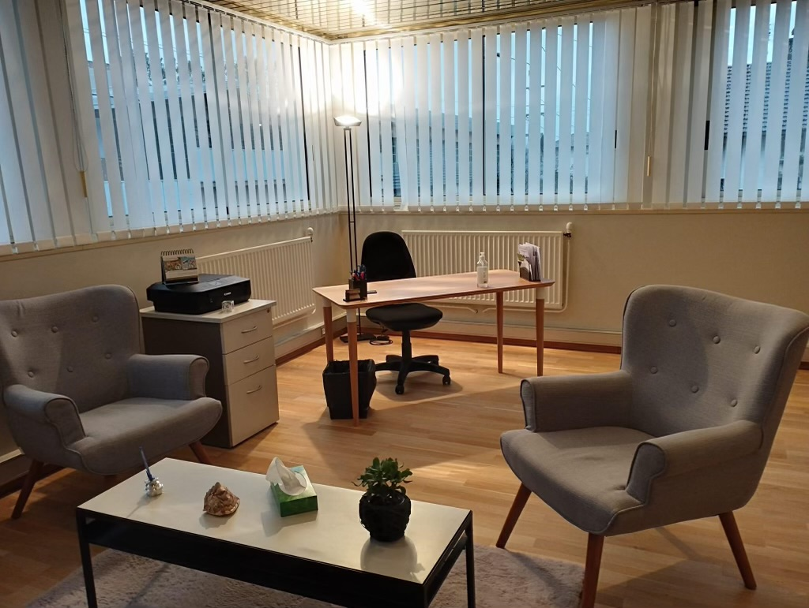
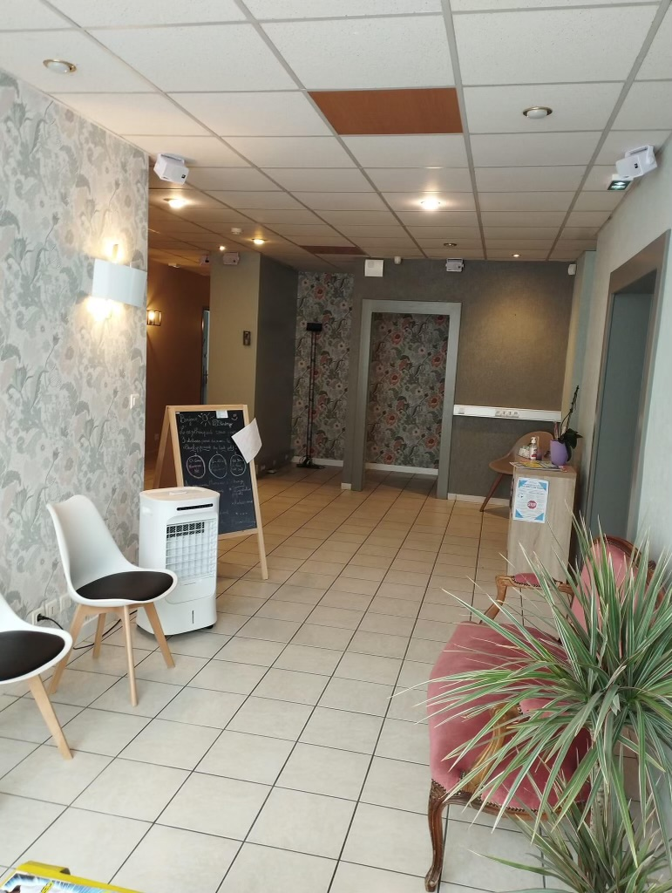
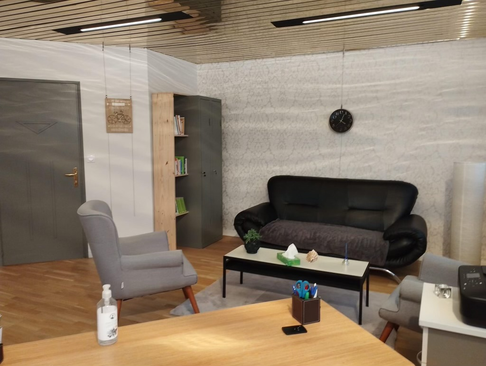
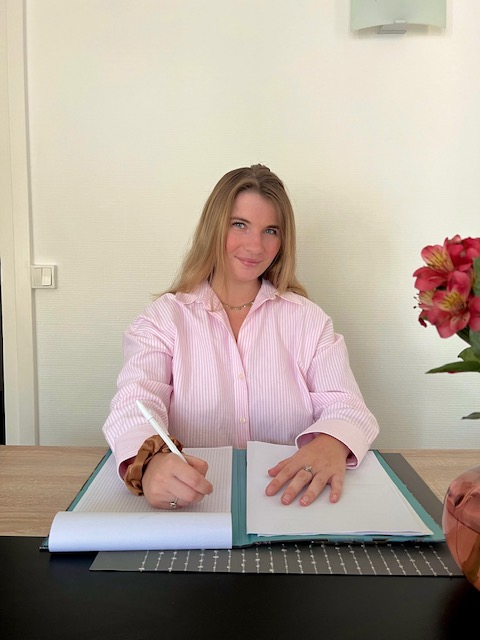

Le cabinet
Enfants
Adolescents / Etudiants
Adultes / Parents
Les motivations qui peuvent nous conduire à consulter un psychologue sont variées : estime de
soi, événements difficiles, questionnements, sentiment d'épuisement, et bien d'autres encore.
Cependant, c'est le désir de se sentir mieux qui pousse à franchir la porte de mon cabinet. C'est
avec bienveillance que je vous accueillerai sur rendez-vous, dans le but de vous accompagner
vers une meilleure connaissance de vous-même, et d'explorer ensemble des solutions et des
ressources pour redonner du sens à votre vie.
Dans cette optique, mes séances s'adapteront à vos besoins. Si vous ressentez le besoin de
parler, je serai à l'écoute - soyez assuré(e), mes "grandes oreilles" sont là pour vous. Si, au
contraire, vous appréhendez de ne pas savoir quoi exprimer, nous pourrons utiliser des outils
pratiques et des supports adaptés pour vous guider. Enfin, si vous préférez ne pas tout dévoiler
dès le début, aucun souci, aucune précipitation. Dans tous les cas, nous progresserons à votre
rythme.



Les séances
Les séances se présentent comme des instants privilégiés d'écoute et de dialogue, se déroulant
sans rythme imposé. Elles offrent l'opportunité d'approfondir sa connaissance de soi-même et de
prendre du recul par rapport à son vécu, dans le but de dégager des solutions optimales.
En ce qui concerne les consultations, elles peuvent avoir lieu en présentiel ou en visioconférence aux créneaux suivant :
- Jeudi : 9h00 à 17h00
- Vendredi : 9h00 à 17h00 (1 vendredi sur trois de 11h00 à 21h00)
La durée d'une séance est d'environ 45 minutes.
Qui suis-je ?

Après une licence à l’Université de Lille, j’ai suivi le master DEHIS – développement éducation
handicap individu et société à l’université de Lille qui me permet de faire usage du titre de
psychologue clinicienne. Cela m’a formé à une pratique générale allant de la petite enfance à
l’âge avancé, avec une spécialisation dans la mise en place d’interventions individuelles et
collectives.
Mon parcours s'est épanoui à travers une pratique polyvalente au sein de diverses structures et
auprès de publics variés. Cette expérience m'a offert l'opportunité d'être en interaction avec :
- des entants dans le contexte d’un séjour de leur proche en service de réanimation
- d’adultes à la maison des aidants
- des personnes âgées résidentes en EHPAD
Ma pratique
Ce parcours diversifié me permet de me présenter comme une boîte à outils dédiée à mes
patients. Mon approche thérapeutique se veut résolument intégrative. J'associe différentes
méthodes afin de m'adapter au mieux à chaque situation : Les thérapies cognitivo-
comportementales (TCC), la psychoéducation, la thérapie ACT (acceptation et engagement), les
approches centrées sur les émotions, les thérapies systémiques ainsi que la psychologie positive.
Je m'engage résolument à poursuivre ma formation de manière continue, en explorant divers
domaines tels que les troubles du développement neurologique, les traumatismes
psychologiques, la gestion du stress et des phobies, les dépendances, l'épuisement
professionnel, ainsi que l'accompagnement parental, parmi d'autres sujets pertinents.
Honoraires
Les tarifs pour les consultations sont les suivants:
- Consultation individuelle : 60€
- Première consultation de couple ou de famille (1h30) : 123€
- Consultation de suivi pour couple ou famille : 82€
J'accepte uniquement les paiements par chèque ou espèces.
Je suis psychologue non conventionnée, ce qui signifie que vous n'avez pas besoin d'une
prescription médicale pour prendre rendez-vous. Veuillez noter que mes services ne sont pas
couverts par la sécurité sociale et ne sont pas remboursables.
Cependant, je vous encourage à vous informer auprès de votre mutuelle, car je peux vous fournir
une attestation de suivi qui pourrait vous permettre de bénéficier d'un remboursement de votre
mutuelle si elle prend en charge les soins psychiques.
Veuillez noter que je ne participe pas au dispositif "monpsysante" et n'accepte pas les
ordonnances médicales comme moyen de référence pour les consultations.